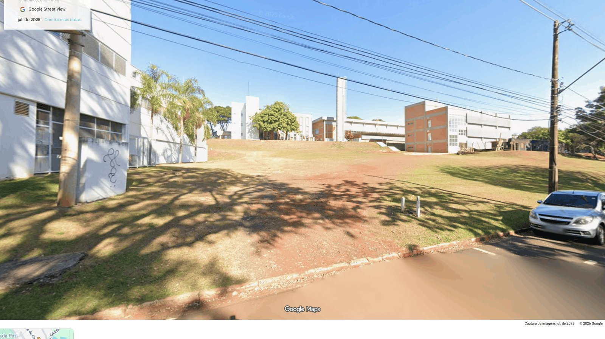

Hoje
3.800 m² de gramado subutilizado
Ao lado do antigo Banco do Brasil — que passará a sediar o novo CONSUN — uma vasta área verde ociosa, sem uso definido.

Pocket HIDS
Uma praça científica viva
A governança máxima da Unicamp ganha, na porta, um laboratório vivo de sustentabilidade que conecta pesquisa, natureza e inovação.
➔
O Contexto Estratégico
O Banco do Brasil se torna o novo CONSUN — e o entorno, uma oportunidade

Galeria do Conceito


Programa de Necessidades
01 · Mutirões de Inovação 700 m²
Convívio & Reunião
Praça de chegada e conexão com o CT
Deck com pergolado solar
Anfiteatro em patamares (60 lugares)
Agrofloresta de convívio
Hotel de abelhas sem ferrão

02 · Forjas & Ateliês 600 m²
Infraestrutura Experimental
Grid de utilidades (água, energia, dados)
Reservatório de águas pluviais (10 mil L)
Estações meteorológicas completas
Fibras e infraestrutura IoT
Sensores de fluxo e contagem

03 · Veredas de Experimentação 500 m²
Vitrine Tecnológica
Jardins de chuva e biorretenção
Horta experimental automatizada
Painel digital interativo de dados
Laboratórios vivos temporários
Jardim vertical com irrigação
01 / 15